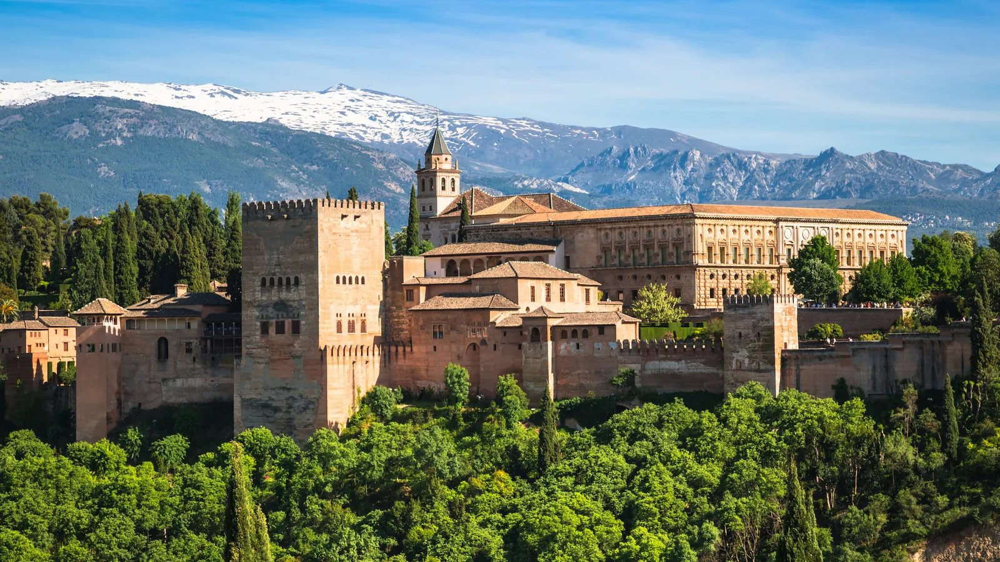
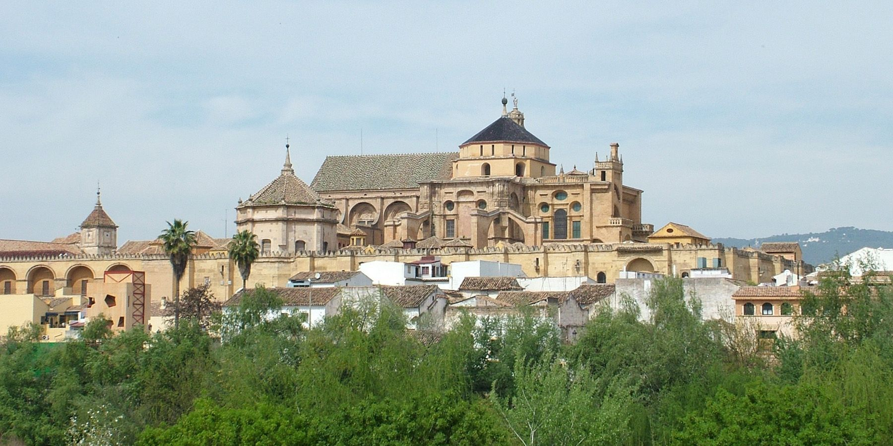
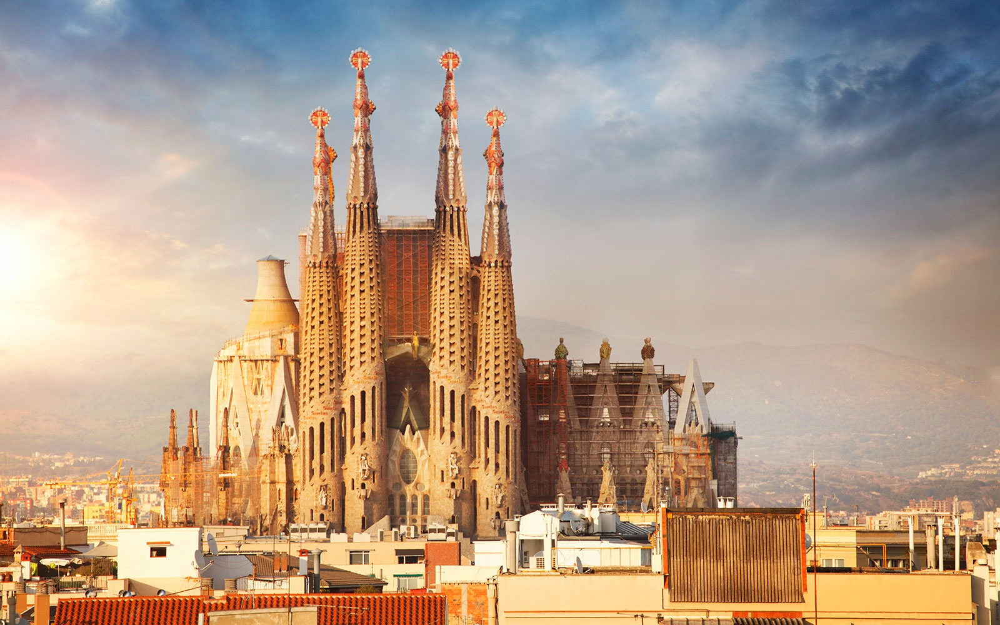

Spanyol adalah sebuah negara yang terletak di Eropa Selatan-Barat Daya
Spanyol adalah negara yang beragam budaya, sejarah, dan geografis, yang membuatnya menjadi tujuan yang menarik bagi wisatawan dan merupakan salah satu kekuatan ekonomi utama di Uni Eropa.
Alhambra

Alhambra adalah sebuah kompleks istana dan benteng yang terletak di kota Granada, Spanyol. Sejarah Alhambra mencakup berbagai periode dan budaya yang berbeda, menjadikannya salah satu situs bersejarah yang paling menarik di Spanyol.
Berikut adalah sejarah singkat Alhambra:
Awal Sejarah : Pembangunan awal Alhambra dimulai pada abad ke-9 oleh Dinasti Nasrid Moor, yang memerintah wilayah Granada selama berabad-abad. Alhambra awalnya merupakan sebuah benteng yang dibangun untuk melindungi kota dari serangan musuh.
Puncak Kemegahan : Pada abad ke-13 dan 14, Alhambra mengalami masa keemasan di bawah pemerintahan Nasrid, terutama di bawah Raja Yusuf I dan cucunya, Raja Muhammad V. Pada periode ini, istana-istana yang indah dan taman-taman dibangun di dalam kompleks Alhambra, menciptakan salah satu karya terbesar arsitektur Moor.
Reconquista : Pada tahun 1492, pasukan Katolik Spanyol yang dipimpin oleh Raja Ferdinand II dan Ratu Isabella I merebut Granada dari kekuasaan Moor, mengakhiri Reconquista, atau pemulihan Spanyol oleh Katolik. Alhambra diambil alih oleh penguasa Katolik, dan beberapa tambahan dilakukan pada kompleks ini, termasuk pembangunan Katedral Granada di dalamnya.
Pemeliharaan dan Pengakuan Dunia : Selama berabad-abad berikutnya, Alhambra mengalami perubahan dan pemeliharaan oleh pemerintah Spanyol yang berbeda. Pada abad ke-19, penulis Amerika Washington Irving tinggal di Alhambra selama beberapa waktu dan menulis tentang pengalamannya, membantu menghidupkan kembali minat dunia terhadap tempat ini. Pada akhirnya, Alhambra diakui sebagai salah satu situs Warisan Dunia UNESCO.
Pariwisata dan Pemulihan : Alhambra menjadi tujuan pariwisata utama di Spanyol dan dikenal di seluruh dunia untuk keindahan arsitekturnya, taman-taman yang indah, dan detail seni mozaik yang rumit. Upaya pemulihan yang besar telah dilakukan untuk mempertahankan warisan budaya ini.
Hari ini, Alhambra adalah salah satu tempat bersejarah yang paling terkenal di Spanyol dan menjadi daya tarik utama bagi wisatawan yang tertarik dengan sejarah, seni, dan arsitektur Moor dan Katolik.
Mezquita-Catedral

Mezquita-Catedral, juga dikenal sebagai Masjid Katedral Cordoba, adalah salah satu monumen paling ikonik di kota Cordoba, Spanyol, dan memiliki sejarah yang panjang dan beragam.
Berikut ini adalah sejarah singkatnya:
Awal Pendirian : Pada abad ke-8 M, ketika Spanyol bagian selatan dikuasai oleh Moor, sebuah masjid dibangun di lokasi yang saat ini ditempati oleh Mezquita-Catedral. Awalnya, masjid ini adalah bangunan kayu yang kemudian digantikan oleh struktur yang lebih besar dan permanen.
Ekspansi : Selama berabad-abad berikutnya, masjid ini terus diperluas dan diperindah oleh dinasti-dinasti Moor yang berkuasa. Mezquita Cordoba menjadi salah satu masjid terbesar dan paling indah di dunia Islam pada saat itu. Salah satu ciri khasnya adalah hutan kolom-kolom marmer yang menciptakan efek luar biasa.
Reconquista : Pada tahun 1236, Cordoba direbut oleh Ferdinand III dari Kastilia selama Reconquista, proses penaklukan kembali Spanyol oleh orang-orang Kristen. Masjid ini kemudian diubah menjadi gereja dan beberapa elemen Katolik ditambahkan ke dalam struktur, seperti kapel-kapel dan altar.
Penambahan Katedral : Pada abad ke-16, gereja ini mengalami perubahan besar ketika pembangunan Katedral Santa María de la Sede, yang merupakan contoh arsitektur Gothik dan Renaissance, dimulai di dalam kompleks masjid. Ini menghasilkan perpaduan unik antara arsitektur Kristen dan Islam yang dapat dilihat dalam bangunan ini.
Pemulihan dan Pengakuan Dunia : Mezquita-Catedral menjadi salah satu tujuan wisata yang paling terkenal di Spanyol dan diakui sebagai Warisan Dunia UNESCO. Ini juga merupakan salah satu situs keagamaan yang paling penting di Spanyol.
Hari ini, Mezquita-Catedral Cordoba adalah salah satu situs bersejarah yang paling menarik di Spanyol. Pengunjung dapat menjelajahi interior yang menakjubkan dengan hutan kolom marmer, melihat arsitektur Kristen dan Islam yang unik, serta menghargai nilai sejarah dan budaya yang beragam dari tempat ini.
Sagrada Familia

Sagrada Familia adalah sebuah basilika Katolik yang terletak di Barcelona, Spanyol, dan merupakan salah satu karya terkenal dari arsitek Antoni Gaudí.
Berikut sejarah singkat Sagrada Familia:
Awal Pembangunan : Pembangunan Sagrada Familia dimulai pada tahun 1882 ketika arsitek Francisco de Paula del Villar mulai merancang gereja tersebut. Namun, Gaudí mengambil alih proyek ini hanya satu tahun kemudian dan mengubahnya secara drastis dengan visinya yang unik.
Gaudí dan Desain Unik : Antoni Gaudí memimpin proyek ini selama hampir 40 tahun hingga kematiannya pada tahun 1926. Dia merancang Sagrada Familia dengan visi arsitektur yang sangat inovatif dan berbeda dari gaya-gaya sebelumnya. Gaudí mengintegrasikan elemen-elemen alam, geometri organik, dan inspirasi dari alam serta ajaran agama Katolik ke dalam desainnya. Gereja ini dirancang untuk menjadi kombinasi yang harmonis antara arsitektur Kristen dan alam.
Penundaan Pembangunan : Pembangunan Sagrada Familia mengalami banyak kendala selama berpuluh-puluh tahun. Perang Saudara Spanyol, Perang Dunia II, dan masalah keuangan merupakan beberapa faktor yang memperlambat proyek ini. Bahkan, pada saat Gaudí meninggal, hanya sebagian kecil gereja yang selesai.
Pemeliharaan dan Kelanjutan : Meskipun pembangunan terhenti beberapa kali, upaya pemeliharaan dan kelanjutan proyek ini terus berlanjut selama beberapa dekade. Kemajuan teknologi konstruksi dan dukungan finansial dari penduduk setempat dan turis telah membantu mendorong proyek ini menuju penyelesaian.
Status UNESCO dan Daya Tarik Wisata : Pada tahun 2005, Sagrada Familia diakui sebagai salah satu Situs Warisan Dunia UNESCO. Gereja ini juga menjadi salah satu daya tarik wisata utama Barcelona dan merupakan simbol kota tersebut.
Saat ini, Sagrada Familia masih dalam tahap pembangunan, tetapi beberapa bagian gereja, termasuk fasade-fasadanya, telah selesai dan dapat dikunjungi oleh wisatawan. Ini adalah salah satu bangunan yang paling diakui dan paling spektakuler di dunia, yang mewakili perpaduan antara seni, arsitektur, dan agama yang unik dalam sejarah Spanyol.